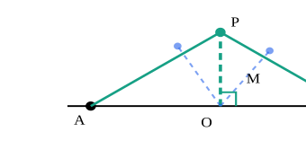
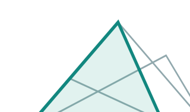
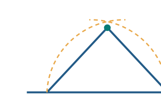
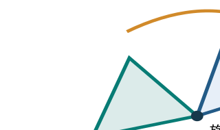
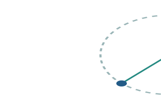
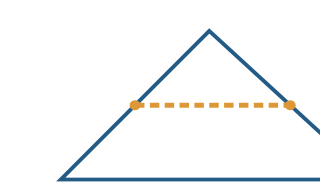
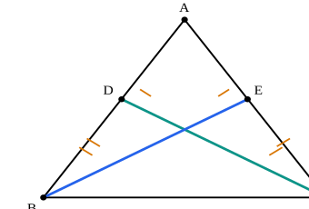

几何刻画思维课：从专家几何认知研究中提炼训练方法
核心方向：把“几何刻画”从画图技巧、辅助线技巧，提升为一种可训练的“动态几何心理表征与构型推理能力”。
你提到的 Koedinger 和 Clemente、Llinares 的研究，实际上指向几何解题中一个非常关键、但传统初中几何教学往往没有系统训练的能力：
高水平解题者不仅能看懂图形，还能在头脑中将复杂图形重新组织成有意义的构型块，模拟它们的生成、分解、组合、运动与变换，并据此预测可能成立的几何关系，规划证明的关键路径。
这可以成为几何刻画思维课程的理论主轴。
我查到了几条值得深入整合的成熟研究路线。其中最重要的并不是一般意义上的“空间想象力训练”，而是以下五种能力的耦合：
构型感知 · 看出隐藏的几何结构
构型重组 · 在头脑中拆解与补全图形
动态模拟 · 想象运动、变换与约束
关系推断 · 识别不变量、临界点与隐含关系
证明规划 · 从关键构型反向组织推理
课程建议采用的认知能力链：这是根据多项研究综合提出的教学模型，并非某一篇论文原有的五阶段模型。
一、最值得吸收的八条成熟研究路线
1. Koedinger & Anderson：构型块与抽象证明规划
Diagram Configuration Model · 1990
这项研究与你想建立的课程最直接相关。
Koedinger 和 Anderson 发现，几何专家规划证明时，往往不会先逐条枚举定理，而是从图中提取有意义的构型块（perceptual chunks），调用与之关联的知识模式，先确定证明的几个关键跳跃，再补齐细节。
认知机制：构型识别 → 图式激活 → 关键结论 → 证明展开。
例如，面对两个相互重叠的三角形，新手可能只看到大量线段和角；专家则可能迅速识别出“共边的两个三角形”“一对旋转对应结构”“可以建立全等的局部构型”。
课程可以据此增加三种专项训练：
- 构型瞬时识别：复杂图闪现数秒后遮挡，要求回忆与目标有关的构型块，而非所有线条。
- 构型遮蔽与提取：从大量重叠线条中隔离有用的三角形、四边形或角关系。
- 证明骨架预判：暂不写完整证明，只写关键构型、目标中间结论及其依赖关系。
尤其值得注意：构型块不是简单的图案模板，而是与定理适用条件、几何关系和证明功能绑定的知识单元。
原始研究：Abstract Planning and Perceptual Chunks（https://doi.org/10.1207/s15516709cog1404_2）。
2. Clemente、Llinares & Torregrosa：原型子构形的启发作用
Configural Reasoning · 2017
这项研究调查了182名职前教师在几何证明题中的表现，发现从初始复杂构型中识别原型图形，会影响后续解题方向，并激活相应的几何知识。
这里需要更准确地理解其发现：论文强调的是原型构形识别具有启发作用，并非证明所有几何题只要识别不出子构形就必然无法求解。
它的课程价值在于：
看得见哪些子图，往往决定学生能想到哪些解题路线。
可采用以下训练：
- 一图多解构：同一复杂图至少提取三种子构形。
- 原型变体识别：将等腰三角形、全等三角形、旋转模型隐藏在不同方向、比例和位置中。
- 功能性识别：不仅说“这里有两个三角形”，还要说明“为什么这一对三角形可能是证明目标的桥梁”。
原始研究：Visualización y razonamiento configural（https://doi.org/10.1590/1980-4415v31n57a24）。
3. Raymond Duval：操作性图形把握与维度解构
Geometrical Figure Apprehension
这是我认为对“几何动图心理想象力”最具课程设计价值的一套理论。
Duval 将几何图形的认知把握区分为四种相互关联的形式：
| 认知形式 | 核心能力 | 训练任务 |
|---|---|---|
| 感知性 Perceptual | 看见图形和子图 | 从复杂图中识别构型 |
| 顺序性 Sequential | 理解图形的构造过程 | 反向复原作图顺序 |
| 操作性 Operative | 在心理上改造图形 | 拆、拼、旋转、平移、延长、补全 |
| 论述性 Discursive | 用性质和定理解释图形 | 将视觉发现转化为严格推理 |
其中，操作性图形把握（Operative Apprehension）尤其重要。
例如，面对两个重叠三角形，不要求学生立即证明全等，而是先想象：
“如果将其中一个三角形绕公共顶点旋转，它能否与另一个形成可识别的对应结构？”
这时训练的不是记忆定理，而是主动改变图形的心理表征。
Duval 还强调从二维整体形状转向一维线段、零维点及其关系的认知解构。学生有时无法解决问题，不是缺少定理，而是始终停留在“看整体轮廓”，无法重新组织点、线与关系。
因此建议设置独立的 图形解构—重构训练，而不是把它仅仅当作辅助线课程的开场步骤。
研究参考：Geometrical Figure Apprehension研究（https://link.springer.com/article/10.1007/s10649-024-10317-5）。
4. Torregrosa、Quesada & Penalva：构型推理的协调机制
Configural Reasoning · 2010/2011
这一系列研究强调：解决几何证明题，并不是单向地从图形进入语言，而是视觉操作与数学推理相互作用的过程。
学生可能先发现一个局部构型，随后通过几何性质推出新关系，再返回图形，重新看见原先不明显的结构。
也就是说：
图形识别 → 逻辑推理 → 图形再组织 → 新的逻辑推理。
课程训练不能只停留在“找隐藏模型”，而应当要求学生每形成一个一级结论，就重新观察整张图：这一结论是否让新的三角形、平行关系、角关系变得有意义？
可设计“构型演化链”训练：每一个推论都触发一次图形重新刻画，记录哪些构型被发现、强化或舍弃。
研究：Razonamiento configural como coordinación de procesos de visualización（https://doi.org/10.5565/rev/ec/v28n3.187）。
5. Kellman、Massey & Son：知觉学习模块（PLM）
Perceptual Learning Modules · 2010
这项研究特别适合把构型识别能力变成可以重复训练、客观评价的课程模块。
Kellman 等人指出，专家与新手之间不仅存在知识量差异，还存在信息提取方式的差异：专家更善于迅速忽略无关信息，直接识别高阶结构。
他们设计的知觉学习模块（PLM）通过大量有变化的辨别、分类和匹配任务训练这种能力，相关数学实验取得了积极结果，但并非直接验证了初中复杂几何证明课程。
适合转化成三种训练：
- 快速构型分类：展示12幅形态不同的图形，判断哪些共享同一个几何结构。
- 近似构型辨伪：两幅图非常相似，但其中一幅缺少全等或相似所需的关键条件。
- 原型迁移：同一个几何模型改变旋转方向、比例、标记位置和背景干扰线，要求仍能识别。
训练设计中的重要原则是：先训练结构辨别的正确性，再提高识别速度，而不是一开始就限时抢答。
研究：Perceptual Learning Modules in Mathematics（https://pmc.ncbi.nlm.nih.gov/articles/PMC6124488/）。
6. Baccaglini-Frank：保持性质的动态拖动
Maintaining Dragging · Dynamic Geometry
这是训练“几何动图心理想象力”的另一条核心研究路线。
在动态几何环境中，学生拖动某一点，同时尝试保持某个几何性质不变，通过这一过程发现隐含的约束条件，进而提出猜想。
例如，某个动点在平面上运动，要求两条线段始终相等。学生不只是观察点的位置，而是要推测：
“为了让这两条线段始终相等，动点究竟必须沿着什么轨迹运动？”

示意图：固定 A、B，满足 PA=PB 的点 P 位于 AB 的垂直平分线上。虚点表示不满足该约束的候选位置。
建议采用四步训练：
- 先看静态图，预测可能的运动轨迹。
- 在脑海中连续移动动点，判断哪些关系保持不变。
- 用 GeoGebra 拖动验证，并寻找临界状态。
- 关闭动画，脱离软件重建运动过程并给出证明。
这里需要区分：动态几何软件中的保持拖动是一种经过研究的探索方法；“从软件拖动逐步撤除支架，最终实现纯心理动画”则是我们建议的课程设计策略，仍需用学习表现验证其效果。
研究：Experimental Approaches to Theoretical Thinking（https://link.springer.com/chapter/10.1007/978-94-007-2129-6_5）。
7. Nathan & Walkington：具身几何认知与动作模拟
Grounded and Embodied Mathematical Cognition · 2017
这项研究的启示是：几何心理操作未必完全依赖静止的视觉想象，身体动作和手势也可以参与空间关系的表征。
例如，学生用双手模拟两个三角形的旋转、重合或翻折，可能更容易理解对应关系如何变化。
但研究同时强调：动作产生的几何直觉不能替代正式证明，必须进一步转换成明确的数学命题。
因此可以加入 手势模拟 → 无手势心理模拟 → 语言解释 → 形式证明 的训练。
适合的动作包括旋转、轴对称、平移、折叠、线段延长，以及追踪动点运动。
不过，相关研究也有相关性证据与干预效果之间的区别，不能简单断言“多做手势必然提高证明能力”。
研究：Grounded and Embodied Mathematical Cognition（https://pmc.ncbi.nlm.nih.gov/articles/PMC5285420/）。
8. Uttal 等人：空间能力的可塑性与迁移
Spatial Skills Training Meta-analysis · 2013
这项元分析整合了217项空间能力训练研究，剔除离群值后得到平均训练效应量 Hedges’ ，并发现对其他空间任务存在一定迁移。
这意味着空间能力并非完全固定的先天特质。
研究采用的空间能力分类也很适合课程设计：
| 空间能力 | 对应几何刻画训练 |
|---|---|
| 物体内部—静态 | 分辨复杂图的组成关系 |
| 物体内部—动态 | 想象构型旋转、翻折、变形 |
| 物体之间—静态 | 识别相对位置与空间约束 |
| 物体之间—动态 | 追踪多图形、多动点关系 |
但要注意，空间训练有效，不等于它自动迁移到中考几何压轴题的证明能力。课程需要建立构型识别、空间操作与严格推理之间的桥梁。
研究：The Malleability of Spatial Skills（https://doi.org/10.1037/a0028446）。
二、另外四条非常值得纳入的研究方向
这四条补足前面研究中相对薄弱的视觉辨别、注意控制、数学严谨性与心理动态模拟。
| 研究方向 | 关键贡献 | 建议的训练方法 |
|---|---|---|
| Fischbein：Figural Concepts | 几何图形同时具有视觉形象和概念定义的性质 | 反原型图形、图形陷阱、图区分与性质辨析 |
| 专家—新手眼动研究 | 专家的注意更受任务相关结构引导，而非只受显眼线条吸引 | 视觉焦点选择、遮蔽无关线段、目标导向扫描 |
| 心理模拟与几何直觉 | 视觉补全和心理模拟可能参与几何推理的发展 | 消失顶点补全、运动轨迹预测、隐藏中间帧重建 |
| 认知负荷与视觉支架 | 提示与构型分组可以帮助新手处理复杂图形，但支架需逐步撤除 | 分层显示、局部聚焦、提示淡出、完整复杂图迁移 |
研究依据分别见 Fischbein（1993）、几何学习眼动探索研究、几何心理模拟研究以及专家视觉任务支架综述。
这里特别值得警惕一个错误：过度训练“标准图形长什么样”，可能反而强化学生对原型外观的依赖。
真正的专家构型识别，应该具有方向不变性、比例不变性、位置不变性，以及面对干扰构型时的辨别能力。
三、把研究转成一套真正训练心理几何动画的课程
我建议不再围绕“辅助线类型”组织主课程，而是建立六级能力训练。

L1 视觉解构：从复杂图中看见构型块
识别、隔离、分类与重组子构形。练习瞬时识别、遮蔽恢复、一图多构型。目标是从“看线条”转向“看关系结构”。

L2 构造逆推：看终态，想生成过程
给出终态图，推断图形可能的构造顺序、依赖条件和新增元素的目的。加入反向拆线、删线后重建及缺失步骤补全。

L3 心理操作：无图模拟构型变换
在头脑中完成旋转、翻折、平移、叠合、拆拼与补全。重点观察元素对应关系如何变化，而不是只描述动画外观。

L4 动态约束：连续追踪运动与不变量
预测动点轨迹、角度和长度的变化，寻找不变量、特殊位置、退化构型及边界临界点。

L5 构型创造：主动补全解题结构
不再被动识别现有模型，而是根据目标关系构思辅助线、旋转复制、轴对称构造、中点连接等结构创造。
L6 证明规划：多构型协同与路径选择
从最终目标反向寻找所需结构，同时从已知条件正向推出一级结论，选择最有价值的中间桥梁，形成完整证明路线。
六级不是六个彼此孤立的章节，而是一个持续循环的能力体系。L1—L4为心理几何操作打基础，L5—L6使这些能力真正进入压轴题求解。
四、建议优先开发的八种核心训练范式
这部分是课程真正可以落地的关键。
| 训练范式 | 学生面对的任务 | 主要检验能力 |
|---|---|---|
| 闪现—遮蔽—重建 | 图形显示5秒后消失，重建关键构型 | 构型块编码 |
| 隐藏子构形搜索 | 在复杂图中找出与目标相关的三个潜在结构 | 选择性知觉 |
| 消失帧预测 | 给出旋转前后两帧，想象中间状态 | 心理动画 |
| 反向构造 | 只看完成图，重建生成过程 | 顺序性把握 |
| 保持约束运动 | 想象如何移动点而不破坏指定性质 | 不变量与轨迹 |
| 反例扰动 | 改变某个条件，判断原结论是否仍成立 | 约束理解 |
| 目标驱动补图 | 给出证明目标，自主生成有用的辅助结构 | 构型创造 |
| 证明骨架压缩 | 不写细节，用3—5个关键推理节点概括解题路线 | 抽象证明规划 |
这里可以建立一个非常有用的评价方式：学生每次练习不仅给出结果，还要提供 心理操作记录。
例如：
“我先把右侧三角形旋转到左侧，发现两条边可能重合；接着检查旋转角度是否由已知条件确定；如果可以，就能够构造全等关系。”
评价时分别检查：想象操作是否可行、对应关系是否正确、是否引入未经证明的条件、能否导出有用的结论。
这种评价比单纯看最后是否解出题目，更容易定位几何刻画能力的真正缺口。
五、以一个小例子说明课程的核心差异
训练题：构型旋转与关系发现
已知 ，点 在 上，点 在 上，且 。证明 。

蓝色为 BE，绿色为 CD；不预先标出所需的两个三角形。
传统训练可能直接引导学生寻找全等三角形 与 。
而心理构型训练则分为几个认知动作：
首先，把两条目标线段 、 看作两个不同三角形中的对应部分；接着，想象以 为中心交换 与 的方向，观察 与 、 与 的对应关系。
然后判断：这两个三角形需要满足哪三个关系，才能由全等保证目标线段相等？
最后把视觉预测转化为证明：
因此
从而
这里心理变换帮助发现对应关系，严格证明仍依赖 SAS 条件，而不是依赖图形看上去对称。
更高一级的任务，则是故意将 、 移到不同的相对位置，或移除 ，让学生判断原有构型推理为何失效。
这才是从“识别熟悉的题型”走向“理解结构如何成立”的训练。
六、课程研发优先级
结合研究的成熟程度、与初中几何的相关性以及教学可实施性，我建议这样排序：
| 优先级 | 研究基础 | 在课程中承担的职责 |
|---|---|---|
| P0 | Koedinger 构型块 | 建立构型知识单元与证明骨架 |
| P0 | Duval 四种图形把握 | 建立心理操作与解构能力分类 |
| P0 | Clemente / Torregrosa 构型推理 | 建立视觉—推理循环 |
| P0 | Kellman 知觉学习 | 建立可重复的构型辨别训练 |
| P1 | Baccaglini-Frank 动态拖动 | 建立运动、约束和不变量训练 |
| P1 | Fischbein 图形概念 | 建立防止视觉误判的机制 |
| P1 | Uttal 空间能力训练 | 建立渐进的空间操作训练 |
| P2 | Nathan 具身认知 | 增加手势与心理模拟支架 |
| P2 | 眼动与认知负荷研究 | 优化注意引导和提示退出机制 |
这里的 P0、P1、P2 是课程开发优先级，不代表研究证据强弱等级。
七、最关键的课程设计裁决
我建议将几何刻画课程的核心目标正式定义为：
几何构型心理操作与证明规划能力（Mental Configuration Manipulation and Proof Planning）
它包含三个相互关联但应当分别测量的目标。
第一，心理表征能力：看到复杂几何图时，能够把它解构为有意义的局部构型，并在脑海中重新组合。
第二，心理动力学能力：能够连续模拟构型的生成、运动、旋转、翻折、退化与临界变化，同时追踪哪些性质保持不变。
第三，结构性推理能力：能够从心理模拟中发现可能的中间关系，主动构造新的辅助结构，并利用形式化证明检验、组织和优化解题路径。
我认为其中最值得特别强化的是第二项。因为大量初中几何教学已经覆盖了定理、辅助线和部分模型识别，但很少把无外部图像辅助的、受数学约束的连续心理动画作为单独训练对象。
与此同时，必须明确一个研究边界：已有文献支持构型识别、图形重组、动态探索和空间训练的重要性，但尚不能据此断言这种综合课程必然提高中考压轴题成绩。应设置前测、后测和陌生题迁移测验，检验真实效果。
最终，课程不应只训练学生“解出这道题”，而应逐步实现：
看到复杂图形，就能在头脑中拆解它、操作它、预测它、重组它，并从多种可能结构中找到最有证明价值的一条路径。
这也意味着后续真正需要建设的，不仅是一套题库，而是一套包含构型块库、心理操作任务库、动态约束任务库、证明骨架任务库和能力测评标准的几何认知训练体系。